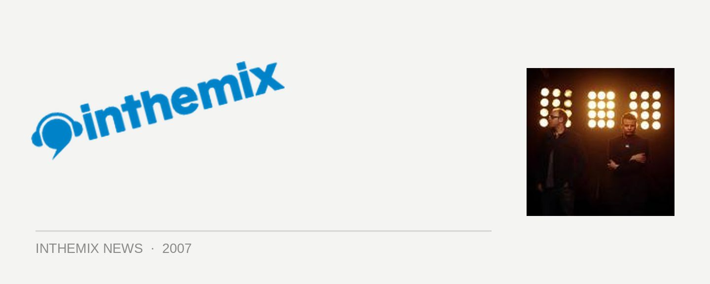

Chemical Brothers announced for Adelaide’s Future Music Festival!
Were you feeling a little left out that one of the Future Music Festival’s biggest drawcards had been left off the Adelaide leg of the tour? Well fear no more because it’s just been announced that the world’s biggest dance act will in fact be playing in your city! Partygoers can now look forward to seeing their spectacular new live show that was debuted at Glastonbury earlier this year, to much boggle-eyed amazement.
Set to take place on Monday March 10th at the Garden of Unearthly Delights, The Chemical Brothers will be joined by John Digweed, Germany’s Sven Vath who will be returning to Australia for the first time in four years, trance stars Eddie Halliwell and Marcus Schultz as well as house music’s hottest name Roger Sanchez, playing alongside rising Dutch DJ/producer Laidback Luke.
Beyond these big names, you’ve got a whole bunch of other excellent artists: tech-funk’s finest Elite Force will be present along with the Shapeshifters and Who Made Who performing live, along with an increased presence of hip hop with Aesop Rock, Kid Koala and DJ Yoda. Plus stacks more!
Future Music Festival hits Adelaide on Monday March 10th at the Garden of Unearthly Delights, grab your tickets now from ITM! And check out what you can look forward to…